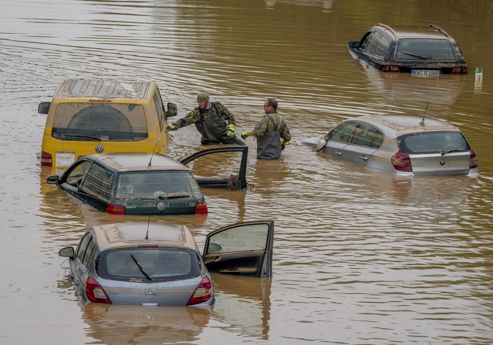
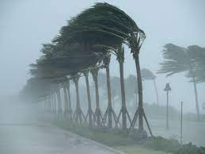

Earthquake
Earthquakes are sudden shaking events caused by the movement of tectonic plates. They can lead to severe damage, injuries, and loss of life.

Floods
Floods occur when water inundates normally dry land, often due to heavy rainfall or melting snow. They can cause extensive property damage and displacement.

Other Disasters
Various natural and human-made disasters, including hurricanes, wildfires, and industrial accidents, can disrupt communities and require immediate response.